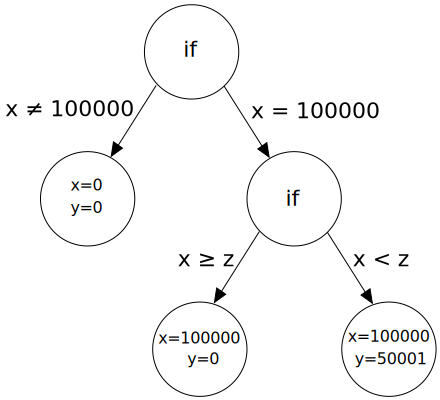
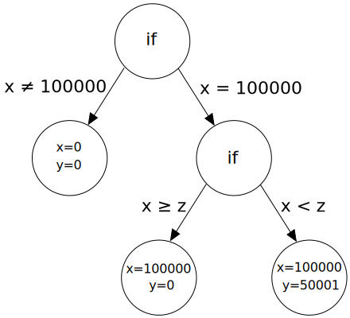
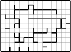
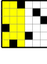
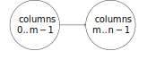

Dagster: Parallel Structured Search with Case Studies
Mark Alexander Burgess, Charles Gretton,Josh Milthorpe, Luke Croak,
Thomas Willingham, Alwen Tiu
Australian National University
Summary
Open Source HPC tool for SAT problems
Inputs:
github.com/ANU-HPC/dagster
Inputs:
- Set of clauses (in DIMACS CNF format)
- (Sub-)problem structure as graph
- Solves subproblems in parallel
- Binary model/models
github.com/ANU-HPC/dagster
(SAT)isfiability problems
- A series of binary variables $x_1,x_2,\dots,x_n$
- A set of constraints those variables must satisfy
- A Solution is binary values that satisfy those constraints
SAT problems
SAT problems often rendered as CNF:$$ (x_1\vee \neg x_2)\wedge(\neg x_2 \vee x_3) $$ which is represented as DIMACS CNF file:
p cnf 3 2
1 -2 0
-2 3 0
SAT problems
Many kinds of SAT problems:Tiling


Graph colouring
Planning
 
Bounded Model Checking
SAT decomposition
- Logically Separate parts
- Search Ordering
Dagster approach: DAG
p cnf 6 8
1 2 3 0
3 4 5 0
5 6 0
-3 -5 0
-2 3 -4 0
-4 5 -6 0
1 2 4 0
3 4 -6 0
DAG-FILE
NODES:6
GRAPH:
0->1:1,2
2->3:3,4
1->4:1,2,3
3->4:3,4,5
5->4:5,6
CLAUSES:
0:0,4,6
1:0,1,3,4,6
2:1,3
3:1,3,5,6,7
4:0-7
5:2,3,7
REPORTING:
1-6
Dagster approach: DAG
Case Study 1
Pentomino Tiling Problemregion splitting
Pentominos Demonstration

Example Usage
Case Study 2
Costas Arrayspartial solution splitting
Case Study: Costas Arrays
What is Costas Array?- One for every row & column
- Displacement between any two is unique
Case Study: Costas Arrays
Easily encoded in SAT.Add some symmetry breaking.
Two stage solution.
 
Cast Study: Costas Arrays
Two stage dagDAG-FILE
NODES:2
GRAPH:
0->1:1,2,3,4,5,6,7,8,9,10,11,12,13,14,15
CLAUSES:
0:0-33
1:0-589
REPORTING:
1-25
Case Study 3
Protocol Model Checkingsplitting by variable fidelity
Model Checking Programs
Can a program error state be reached?Annotate source, compile to SAT problem
CBMC: https://github.com/diffblue/cbmc
Example run
int main() {
int X_1;
X_1 = X_1 * X_1;
X_1 = (X_1 ^ 1936);
if ((X_1 & 47732)==0) {
__CPROVER_assert(0, "I did a booboo"); // Oh my error state!
}
}
$ cbmc test.c
CBMC version 5.10 (cbmc-5.10) 64-bit x86_64 linux
Parsing test.c
.......................
Solving with MiniSAT 2.2.1 with simplifier
1810 variables, 9230 clauses
SAT checker: instance is SATISFIABLE
Runtime decision procedure: 0.00649107s
** Results:
[main.assertion.1] I did a booboo: FAILURE
** 1 of 1 failed (1 iteration)
VERIFICATION FAILED
Implied freedom
You can do SAT reasoning about logic which you can code (...in principle...)Including emulation of a communication protocol between actors.
Where an error state is where protocol is broken.
Example Pseudocode
int main() {
Communicated_Data X_1;
X_1.append(Actor_1_communicate(X_1));
X_1.append(Actor_2_communicate(X_1));
X_1.append(Actor_3_intercept(X_1));
X_1.append(Actor_1_communicate(X_1));
X_1.append(Actor_3_recieve(X_1));
if (Actor_3_has_secret_key()) {
__CPROVER_assert(0, "Protocol broken");
}
}
Bounded Model Checking with AI variables
Protocols can involve many elements(packets, hashes, ids, etc)
A hack may not depend on specific elements.
Approach: resolve a hack at a lower level of variable resolution, and propagate to higher level.
Summary
- Dagster is open source parallel SAT solver
- solves based on DAG decomposition
- Solves: Discrete/Tiling/Model-Checking problems
Thankyou
github.com/ANU-HPC/dagstermark.burgess@anu.edu.au